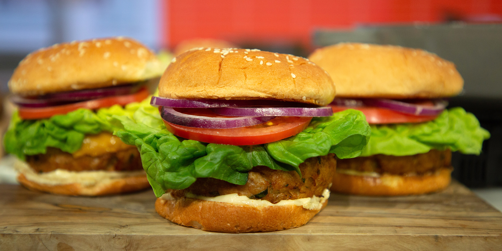

Plotting
|
Explorative Datenanalyse mit R The R Bootcamp |

|

from today.com
Überblick
In diesem Practical wirst du üben mit ggplot2 Grafiken zu erstellen.
Am Ende des Practicals wirst du wissen wie man:
- Einen Plot Schritt-für-Schritt aufbaut.
- Verschiedene
geoms verwendet. - Farben verändert.
Aufgaben
A - Setup
Öffne dein
TheRBootcampR project. Es sollte die Ordner1_Dataund2_Codeenthalten.Öffne ein neues R Skript. Schreibe deinen Namen, das Datum und “Plotting Practical” als Kommentare an den Anfang des Skripts.
## NAME
## DATUM
## Plotting PracticalSpeichere das neue Skript unter dem Namen
plotting_practical.Rim2_CodeOrdner.Lade
tidyverseundggthemes.
B - Lade den Datensatz
Verwende die
read_csv()Funktion um den Datensatzmcdonaldsals Objektmcdonaldseinzulesen. Denke an den Trick mit den Anführungszeichen.Printe den Datensatz. Wurden alle Variablentypen korrekt identifiziert?
Verwende
summary()um einen weiteren Überblick über die Daten zu bekommen.
C - Baue einen Plot
In diesem Abschnitt wirst du den folgenden Plot Schritt-für-Schritt zusammenbauen.
- Verwende
ggplot()um einen leeren Plot für denmcdonaldsDatensatz zu starten.
ggplot(data = mcdonalds)- Verwende nun das
mapping-Argument und dieaes()-Helferfunltion umCaloriesder x-Achse undSaturatedFatder y-Achse zuzuweisen.
ggplot(data = mcdonalds,
mapping = aes(x = XX, y = XX))Ergänze
geom_point()mit+um Punkte zu plotten.Verwende das
colArgument inaes()um die Farbe nach der VariableCategoryvariieren zu lassen.
ggplot(mcdonalds, aes(x = XX, y = XX, col = XX)) +
geom_point() - Ergänze
+ geom_smooth()um eine gefittete Linie zu ergänzen.
ggplot(mcdonalds, aes(x = XX, y = XX, col = XX)) +
geom_point() +
geom_smooth()- Oops! Hast du mehre Linien anstatt einer bekommen? Löse das Problem indem du die Farbe innerhalb von
geom_smooth()auf"black"setzt.
ggplot(mcdonalds, aes(x = XX, y = XX, col = XX)) +
geom_point() +
geom_smooth(col = "XX") R versteht eine grosse Menge von Farbworten. Lasse dir diese mit
colors()(ohne Argumente) anzeigen. Alle aufgeführtencharacterWerte können verwenden werden um die entsprechende Farbe zu definieren.Verwende nun
labs()um den Plot angemessen zu annotieren.
ggplot(mcdonalds, aes(x = XX, y = XX, col = XX)) +
geom_point() +
geom_smooth(col = "XX") +
labs(title = "XX",
subtitle = "XX",
caption = "XX")- Verwende
xlim(), eine einfache Version vonscale_x_continuous()(mehr dazu später), um die x-Achse auf die Werte0und1250zu begrenzen.
ggplot(mcdonalds, aes(x = XX, y = XX, col = XX)) +
geom_point() +
geom_smooth(col = "XX") +
labs(title = "XX",
subtitle = "XX",
caption = "XX") +
xlim(XX, XX)- Abschliessend verwende
theme_minimal()um die Ästhetik des Plots anzupassen. Auch hierzu mehr später.
D - geoms
- Verwende den Code unten um einen Violinen-Plot der
Calories(y-Achse) in Abhängigkeit derCategory(x-Achse) zu kreieren. Violinenplots zeigen mit ihrer Dicke die jeweilige relative Häufigkeit der Werte an - in diesem Fall der Kalorien. Verwende für das ArgumentfillebenfallsCategory, um die Violinen entsprechend einzufärben.
ggplot(data = mcdonalds,
aes(x = XX, y = XX, fill = XX)) +
geom_violin()- Ergänze mit
labs()einen angemessenen Titel (title) und Untertitel (subtitle).
ggplot(data = mcdonalds, aes(x = XX, y = XX, fill = XX)) +
geom_violin() +
labs(title = "XX",
subtitle = "XX")- Ergänze
guides(fill = FALSE), so dass keine Legende gezeigt wird.
ggplot(data = mcdonalds, aes(x = XX, y = XX, fill = XX)) +
geom_violin() +
labs(title = "XX",
subtitle = "XX") +
guides(fill = FALSE)Verwende
geom_jitter()um Punkte über die Violinen zu plotten. Setze in der Funktionwidth = 1undalpha = .5.Probiere ein paar Sachen aus:
- Ändere die Werte für
widthoderalphaingeom_jitter(). - Entferne
fill = Category. - Verwende
geom_boxplot()um stattdessen einen Box-Plot zu plotten.
E - geom_text
In dieser Sektion wirst du den folgenden Plot unter Verwendung von geom_text() kreieren.
- Beginne damit folgendes Code-Template entsprechend auszufüllen.
ggplot(mcdonalds, aes(x = XX,
y = XX,
col = XX)) +
geom_point() +
xlim(XX, XX) +
ylim(XX, XX) +
theme_minimal() +
labs(title = "XX")Nun ergänze
geom_text()so dass für jeden Punkt das entsprechendeItemLabel angezeigt wird.Wo sind die Labels? Ah, du hast
ggplotnicht gesagt welche Spalte die Information beinhaltet, die in den Labels stehen soll. Behebe dieses Problem indem du innerhalb deraes()Funktion dem Argumentlabeldie SpalteItemzuweist. Führe den Code nochmal aus. Jetzt solltest du viele labels sehen!Passe
geom_text()an in dem ducolaufblack,check_overlapaufTRUE, undhjustaufleftsetzt.Verwende nun das
dataArgument ingeom_text()und weise ihm einen gefilterten Auschnitt desmcdonaldsDatensatzes zu, nämlichdata = mcdonalds %>% filter(Calories > 1100). Schau was passiert.Probiere ein paar Sachen aus:
Verwende das
sizeArgument inaes(), so dass die Grösse der Punkte denCaloriesentspricht.Versuche andere
theme_*Funktionen. Z.B.theme_excel()odertheme_economist()aus demggthemesPaket.
F - Statistiken
- Mit der
stat_summary()Funktion können auch direkt einfache Statistiken berechnet und geplotted werden. Verwende den folgenden Code um dieCalories(y-Achse) gegenCategorieszu plotten. Annotiere angemessen.
ggplot(XX, aes(x = XX, y = X)) +
stat_summary(geom = "bar",
fun.y = "mean") +
labs(title = "XX",
subtitle = "XX")- Probiere ein paar Sachen aus:
- Verwende den
"median"anstatt"mean". - Gib jedem Balken eine andere Farbe.
- Ergänze Punkte über den Balken mit
geom_point(),geom_count(), odergeom_jitter().
X - Challenges
- Kreiere deinen eigenen, neuen Plot mit dem
mcdonaldsDatensatz. Weiteregeoms und alles weitere findest du hier
Beispiele
# Lade tidyverse
library(tidyverse)
# Printe die mpg Daten
mpg
# Beginne den Plot
ggplot(data = mpg)
# Ergänze das mapping, d.h. bestimme x und y
ggplot(data = mpg,
mapping = aes(x = displ, y = hwy))
# Ergänze Punkte
ggplot(data = mpg,
mapping = aes(x = displ, y = hwy)) +
geom_point()
# Ergänze nach Häufigkeit skalierte Punkte
ggplot(data = mpg,
mapping = aes(x = displ, y = hwy)) +
geom_count()
# Assigne class zum col Argument und füge labels mit labs() hinzu
ggplot(data = mpg,
mapping = aes(x = displ, y = hwy, col = class)) +
geom_point(size = 3, position = 'jitter') +
labs(x = "Hubraum in Litern",
y = "Autobahn Meilen pro Gallone",
title = "MPG Datensatz",
subtitle = "Autos mit groesserem Hubraum fahren wneiger Meilen",
caption = "Quelle: mpg Datensatz aus ggplot2")
# Ergänze eine Kurve für jede Klasse
ggplot(data = mpg,
mapping = aes(x = displ,
y = hwy,
color = class)) +
geom_point(size = 3, alpha = .9) +
geom_smooth(method = "lm")
# Ergänze eine Kurve für alle Klassen zusammen
ggplot(data = mpg,
mapping = aes(x = displ,
y = hwy,
color = class)) +
geom_point(size = 3, alpha = .9) +
geom_smooth(col = "blue", method = "lm")
# Kombination von verschiedenen Elementen
ggplot(data = mpg,
mapping = aes(x = cty, y = hwy)) +
geom_count(aes(color = manufacturer)) +
geom_smooth() +
geom_text(data = filter(mpg, cty > 25),
aes(x = cty,y = hwy,
label = rownames(filter(mpg, cty > 25))),
position = position_nudge(y = -1),
check_overlap = TRUE,
size = 5) +
labs(x = "Hubraum in Litern",
y = "Autobahn Meilen pro Gallone",
title = "MPG Datensatz",
subtitle = "Autos mit groesserem Hubraum fahren wneiger Meilen",
caption = "Quelle: mpg Datensatz aus ggplot2")Datensätze
| File | Rows | Columns |
|---|---|---|
| mcdonalds.csv | 260 | 24 |
First 5 rows and columns of mcdonalds.csv
| Category | Item | ServingSize | Calories | CaloriesfromFat |
|---|---|---|---|---|
| Breakfast | Egg McMuffin | 4.8 oz (136 g) | 300 | 120 |
| Breakfast | Egg White Delight | 4.8 oz (135 g) | 250 | 70 |
| Breakfast | Sausage McMuffin | 3.9 oz (111 g) | 370 | 200 |
| Breakfast | Sausage McMuffin with Egg | 5.7 oz (161 g) | 450 | 250 |
| Breakfast | Sausage McMuffin with Egg Whites | 5.7 oz (161 g) | 400 | 210 |
Funktionen
Pakete
| Paket | Installation |
|---|---|
tidyverse |
install.packages("tidyverse") |
ggthemes |
install.packages("ggthemes") |